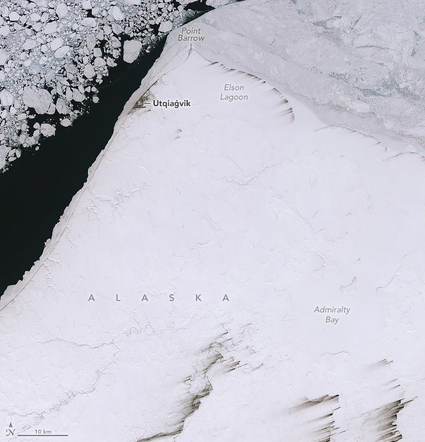

Months in the Midnight Sun
In early May 2025, residents of Utqiaġvik, Alaska, were acclimating to the arrival of an exceptionally long stretch of daylight. In the northernmost city in the United States, the Sun won’t dip below the horizon between May 10 and August 2—a whopping 84 days.
This pair of images shows how the Arctic tundra around Utqiaġvik transforms from spring to summer during its prolonged period without a sunset. They were acquired on May 7, 2025 (left), and August 6, 2023 (right), with the OLI-2 (Operational Land Imager-2) on Landsat 9.
Utqiaġvik (formerly known as Barrow) is located on Alaska’s North Slope at 71.29°N latitude, more than 300 miles (500 kilometers) north of the Arctic Circle. Point Barrow, a headland north of the city, marks the northernmost point in the United States and the boundary between the Chukchi and Beaufort seas. The city has a population of around 4,500 people, about 60 percent of whom are Iñupiat.
Although the calendar indicates it is springtime, the landscape in May still has the black-and-white look of winter. Some sea ice clings to the coastline, while pieces of various sizes float farther offshore. A layer of snow covers the land but is thin enough for the outlines of lakes and the winding paths of rivers to show through. The tundra here only receives about 4.1 inches (105 millimeters) of annual precipitation on average, and much of it occurs in the summer months.
A satellite image shows snow-covered land with the shapes of lakebeds and riverbeds faintly visible. Parallel dark streaks extend toward the bottom-left of the image from some parts of three riverbeds.
Winds were blowing up to 32 miles (51 kilometers) per hour from the east-northeast during the first week of May 2025, according to climatological data from the National Weather Service. These winds appear to have picked up material from riverbeds and some stretches of coastline, where snow was especially thin, and streaked it across the snow. Soils in this area contain high levels of organic matter, which may contribute to the streaks’ dark appearance.
Land and sea display a more varied color palette in the August 2023 image at the top of the page. Smaller bits of sea ice float offshore, and suspended material brightens coastal waters. The tundra terrain is dominated by a network of elongated thermokarst lakes. These ponds form because only the surface of the soil thaws here in the summer, while the ground below remains frozen year-round. Melted snow and ice can’t percolate deeply, and the flatness of the terrain slows drainage to the sea.
The extremes of this northern landscape have long attracted research attention. For nearly 150 years, expeditions and long-term monitoring stations have supported a host of environmental, geographical, and other studies in the area.
Equally extreme is the timing of night and day. In addition to Utqiaġvik’s long “polar day,” it also experiences a protracted “polar night” when the Sun sets in mid-November and doesn’t rise again until mid-January.